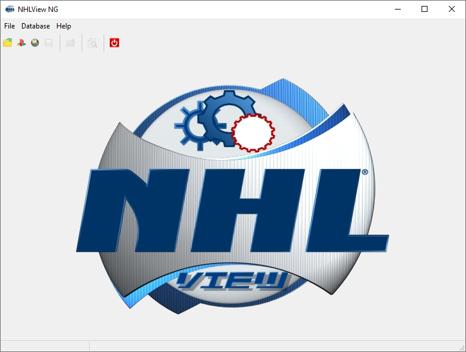

Upon launching NHLView NG you will see an empty window with only the menu, the toolbar and the status bar.

NHLView NG Main Window
The contents of the window will shown once the roster is opened. The status bar is used to display the progress of an operation as well as to display informative hints where applicable. If you mouse over a control that has additional information, it will be displayed in the status bar.
The main menu and the toolbar offer ways to load and save the rosters, as well as perform various operations when rosters are loaded. When the command is greyed out, it is because the roster is not loaded or the command is not applicable to the current selection.
Here is a brief summary of the commands in the main menu:
File Menu
Open - Opens a roster file stored in plain t3db database. You will most likely never need to use this command because t3db database of the roster file is usually packaged in container file of the particular console.
Open PS3 Save - Opens the roster file stored in PS3 container format. See Getting Started: PS3 for more details.
Open XBox 360 Save - Opens the roster file extracted from the XBox 360 CON-file. A third-party tool, such as Horizon is required for extraction. Refer to Getting Started: XBox 360 for information on opening XBox 360 files.
Save - Enabled when the opened roster has modifications, this command saves those changes. The changes are saved in the same file as the one that was opened.
Close - Closes the currently opened roster without saving modifications, though you will be prompted to save the changes before closing in case you accidentally pressed on this command.
Exit - Exit NHLView NG, discarding the current changes if relevant. Again, you will be prompted to save if there are unsaved modifications.
Database Menu
US Unit System - Display and edit height and weight in feet and pounds respectively.
Metric Unit System - Display and edit height and weight in centimeters and kilograms. Note that the game stores the values in US unit system which means that metric values are rounded. So it is possible that two or three metric units will be stored as the same US unit. For example, 187, 188 and 189 cm will be stored as 6' 2" which means that when NHLView converts it back to cm, you will always see 188 cm. There is no way of preserving the height in cm exactly because of 2.54 cm gap between two inches.
Create Player - Display a dialog allowing to insert a new player in the roster. The created player behaves just like a built-in player, so it does not have customizable appearance. Once the player is created, it cannot be deleted. It is recommended to save the roster before using this function, because if something fails the roster may become inconsistent.
Adjust Attributes - Display a dialog allowing to bulk modify up to 10 skater or goalie attributes. The bulk modification does not save the roster but there is no undo functionality. So the only way to revert changes is to close the roster and reload. It is therefore recommended to save the roster before using this functionality.
Find - Search for a string in the list of the currently active tab. When the string is found in any of the columns of the list, the corresponding entity is selected. This command is available on Players, Teams and Arenas tabs.
Error Log - The roster file might not be consistent and sometimes NHLView NG has to decide how to handle the unexpected data it reads while loading the database. For example, it's possible that player's attribute information is missing. In this case, NHLView NG has to modify the database while loading in order to insert the missing record. The Error Log shows all inconsistencies where NHLView NG modified the database to recover from unexpected data. Note that despite its name, messages in Error Log correspond actually to corrections from which NHLView was able to recover. So these are "good" errors. It's possible that roster file is corrupted to the point that NHLView NG cannot load it. In this case, the loading will be aborted entirely and you will see a single error message in the main window.
Help Menu
User's Guide - Display the table of contents of this help file.
Help For Selection - Display the topic of this help file that best describes the currently selected control in the main window. The same can be achieved by pressing F1.
About - Display version and credits information.